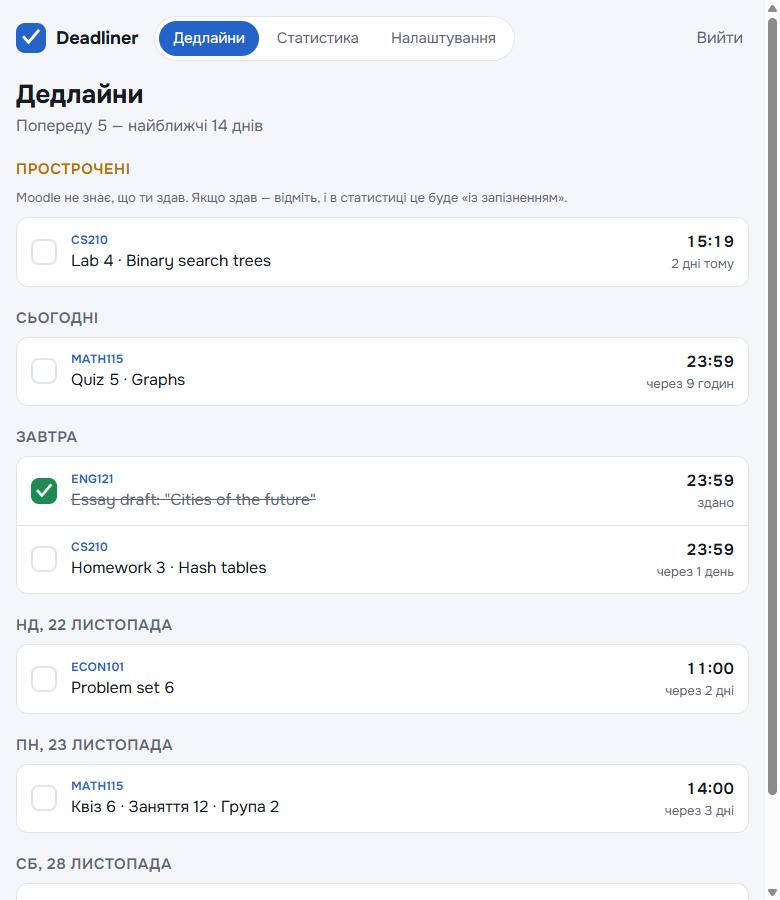

Messenger
Real-time chats with contacts and email sign-up. I wrote most of the backend: JWT auth and WebSocket messaging. 2nd place, 2024.
Java full-stack developer working with Spring Boot and React. I led team CoffeeProgrammers to 1st place in 2025 and 2nd place in 2024 at the All-Ukrainian Team Programming Tournament.
Computer Software Engineering student at Kyiv School of Economics, looking for a Java or full-stack internship.
My solo project Deadliner, five full-stack apps built with my team for the tournament, and the website of my lyceum. On each team project I planned the work, designed the database and reviewed code.
A Telegram bot and web dashboard that remind KSE students about their Moodle deadlines. Paste your Moodle calendar link once, and the bot reminds you 3 days, 1 day and 3 hours before each deadline.

The official website of the lyceum where I studied for 11 years: 27 pages in Ukrainian and English, plus an admin panel where staff edit everything without touching code. I built about 90% of it.
A platform for running the SFL Programming Tournament 2026: teams, rounds, tasks per round, jury scoring, a leaderboard and PDF certificates.
A platform where students start petitions and teachers, parents and the director run school votes. A petition with 50% support goes to the director for a decision.

A shared calendar for a school: events, tasks linked to events, invitations and notifications for students, teachers and parents.
Real-time chats with contacts and email sign-up. I wrote most of the backend: JWT auth and WebSocket messaging. 2nd place, 2024.
Grades, subjects, class schedules and school news. Our first team project. 2nd place, 2024.
University team project: ranks countries by how close they match your ideal profile, using World Bank data. I wrote about 70% of the code. Python and Streamlit.
A study site I made for my course: notes, 76 problems and timed mock tests.
I like turning a team's idea into a working product, and I learned the most from planning, splitting work and shipping before a deadline.
Java, Spring Boot, Spring Security, Spring Data JPA, PostgreSQL, Flyway, React, TypeScript, Next.js, Prisma, MUI, Docker, Keycloak, JUnit, Git
Jury member at Star for Life Ukraine IT programs. Languages: Ukrainian, English, Polish (A2).